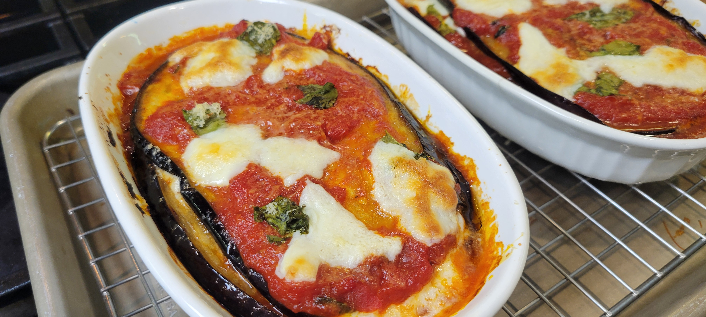

Traditional Eggplant Parmesan

This is my take on a traditional Neapolitan Parmigiana di Melanzane made with fried eggplant, a simple San Marzano tomato sauce, fresh mozzarella, Parmigiano Reggiano, and basil. I expected it to be good. I didn't expect it to disappear as quickly as it did. The balance of eggplant, tomato, mozzarella, Parmigiano, basil, and garlic was exactly what I was hoping for—every bite tasted like every ingredient.
Prep Time
1–2 hours (salting and draining)
Cook Time
1 hour
Total Time
About 2½–3 hours
Servings
1–2
Watch the Video
Ingredients
- 1 medium Italian eggplant (about 12–14 oz / 350–400 g)
- Kosher salt
- Olive oil or peanut oil, for frying
- 1 tablespoon extra virgin olive oil
- 1 large garlic clove, lightly crushed
- 1 cup (240 ml) crushed San Marzano tomatoes
- 3–4 fresh basil leaves
- Fine sea salt, to taste
- 4 oz (115 g) fresh fior di latte mozzarella, sliced and well drained
- ¼ cup (25 g) freshly grated Parmigiano Reggiano
- A few fresh basil leaves
Instructions
- Slice the eggplant into ¼-inch (6 mm) rounds.
- Arrange the slices on a wire rack or in a colander, sprinkling each layer generously with kosher salt.
- Let them rest for 1–2 hours.
- Pat the slices completely dry before frying.
- Heat the olive oil over medium-low heat.
- Add the garlic and cook gently until fragrant.
- Add the crushed San Marzano tomatoes and a pinch of salt.
- Simmer gently for 20–30 minutes.
- Add the basil during the last 5–10 minutes of cooking.
- Remove the garlic before assembling. The sauce should be fresh and slightly loose.
- Heat the oil to 350°F (175°C).
- Fry the eggplant slices in batches until lightly golden on both sides.
- Transfer to a wire rack or paper towels to drain.
- Slice the mozzarella and drain it for several hours (or overnight) on paper towels in the refrigerator. This helps prevent excess moisture in the finished dish.
- Use a small baking dish (approximately 5 × 7 inches or a similar-sized gratin dish).
- Lightly coat the bottom with tomato sauce.
- Layer tomato sauce, fried eggplant, mozzarella, Parmigiano Reggiano, and basil leaves.
- Repeat until all ingredients are used.
- Finish with a light layer of sauce, Parmigiano Reggiano, a few pieces of mozzarella, and basil.
- Bake at 375°F (190°C) for 30–35 minutes, until bubbling and lightly browned.
- Allow the parmigiana to rest for 20–30 minutes before serving. Like many baked Italian dishes, it's often even better after several hours or the next day.
Chef’s Notes
Drain the mozzarella well—this is one of the most important steps. Don't over-sauce the layers; the eggplant should remain the star. Fry the eggplant until just golden, not dark brown, to preserve its delicate texture. A small dish with 2–3 layers produces the best balance of sauce, eggplant, and cheese.
Equipment Used
- Wire rack or colander
- Small saucepan
- Frying pan or pot for frying
- Small baking dish (about 5 × 7 inches)
- Home oven